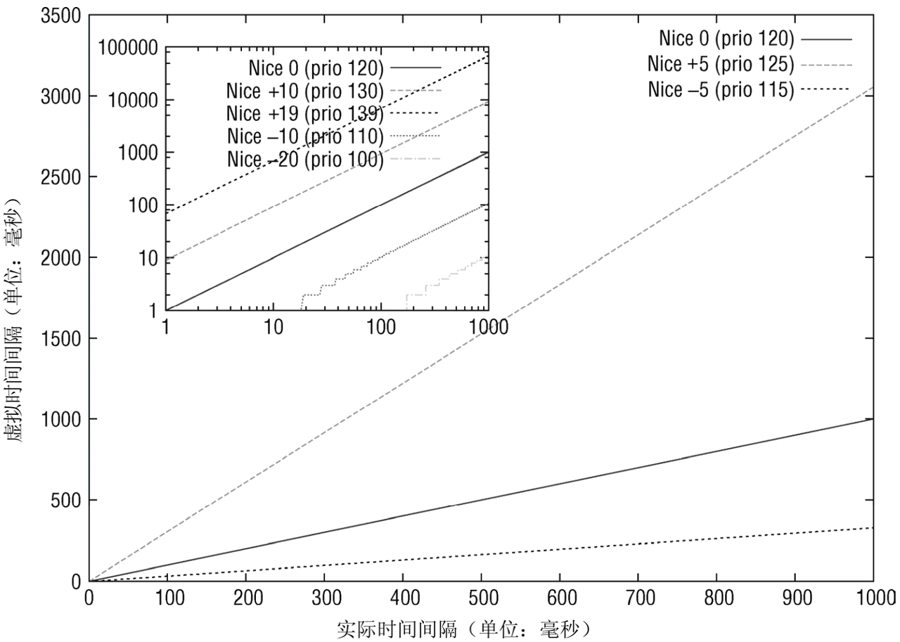
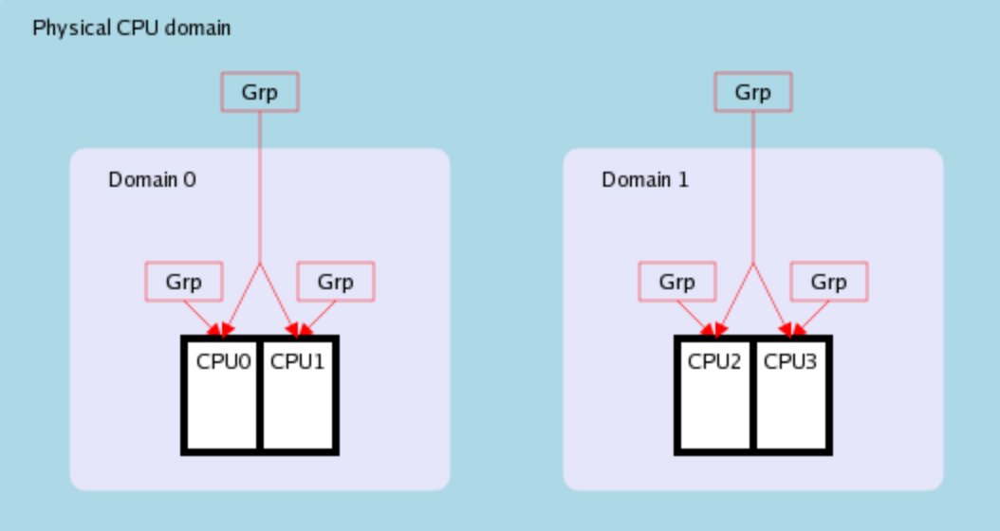
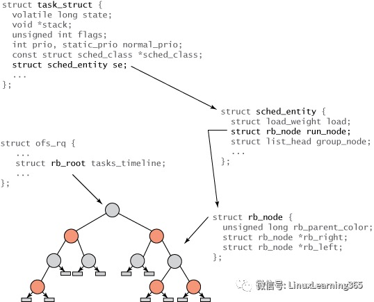
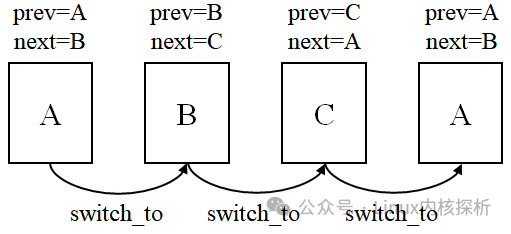

概述
- 本篇讲述 Linux 进程调度器
一 进程调度的原理
计算机中有一个设备，叫定时器，准确说叫可编程定时/计数器。 这个定时器每隔一段时间就会向 CPU 发起一个中断信号。

在 linux-0.11 中，这个间隔时间被设置为 10 ms，也就是 100 Hz。
shedule.c
#define HZ 100
发起的中断叫时钟中断，其中断向量号被设置为了 0x20。
1 时钟中断
一切的源头，就源于这个每 10ms 产生的一次时钟中断。 当然如果没有操作系统的存在，这个 10ms 一次的时钟中断，就打了水漂，CPU 会收到这个时钟中断信号，但不会做出任何反应。 但很不幸，linux 提前设置好了中断向量表。
schedule.c
set_intr_gate(0x20, &timer_interrupt);
这样，当时钟中断，也就是 0x20 号中断来临时，CPU 会查找中断向量表中 0x20 处的函数地址，这个函数地址即中断处理函数，并跳转过去执行。 这个中断处理函数就是 timer_interrupt，是用汇编语言写的。 system_call.s
_timer_interrupt:
...
// 增加系统滴答数
incl _jiffies
...
// 调用函数 do_timer
call _do_timer
...
这个函数做了两件事，一个是将系统滴答数这个变量 jiffies 加一，一个是调用了另一个函数 do_timer。
sched.c
void do_timer(long cpl) {
...
// 当前线程还有剩余时间片，直接返回
if ((--current->counter)>0) return;
// 若没有剩余时间片，调度
schedule();
}
do_timer 最重要的部分就是上面这段代码，非常简单。 首先将当前进程的时间片 -1，然后判断：
- 如果时间片仍然大于零，则什么都不做直接返回。 后续继续从内核空间返回用户空间、运行当前的进程.
- 如果时间片已经为零，则调用
schedule()，用脚去想也知道，这就是进行进程调度的主干。
2 进程的调度
void schedule(void) {
int i, next, c;
struct task_struct ** p;
...
while (1) {
c = -1;
next = 0;
i = NR_TASKS;
p = &task[NR_TASKS];
while (--i) {
if (!*--p)
continue;
if ((*p)->state == TASK_RUNNING && (*p)->counter > c)
c = (*p)->counter, next = i;
}
if (c) break;
for(p = &LAST_TASK ; p > &FIRST_TASK ; --p)
if (*p)
(*p)->counter = ((*p)->counter >> 1) +
(*p)->priority;
}
switch_to(next);
}
别看一大坨，我做个不严谨的简化，你就懂了。
void schedule(void) {
int next = get_max_counter_from_runnable();
refresh_all_thread_counter();
switch_to(next);
}
很简答，这个函数就做了三件事：
- 1 拿到剩余时间片（counter 的值）最大且在 runnable 状态（state = 0）的进程号 next。

-
2 如果所有 runnable 进程时间片都为 0，则将所有进程（注意不仅仅是 runnable 的进程）的 counter 重新赋值（counter = counter/2 + priority），然后再次执行步骤 1。
-
3 最后拿到了一个进程号 next，调用了
switch_to(next)这个方法，就切换到了这个进程去执行了。
3 切换进程
看 switch_to 方法，是用内联汇编语句写的。
其实主要就干了两件事。
-
通过 ljmp 跳转指令跳转到新进程的偏移地址处。
-
将当前各个寄存器的值保存在当前进程的 TSS 中，并将新进程的 TSS 信息加载到各个寄存器。（这部分是执行 ljmp 指令的副作用，并且是由硬件实现的）
简单说，保存当前进程上下文，恢复下一个进程的上下文，跳过去！啥是上下文，就是他喵的一堆寄存器的值而已。

至此，我们梳理完了一个进程切换的整条链路，先来回顾一下。
- 罪魁祸首的，就是那个每 10ms 触发一次的定时器滴答。
- 而这个滴答将会给 CPU 产生一个时钟中断信号。
- 而这个中断信号会使 CPU 查找中断向量表，找到操作系统写好的一个时钟中断处理函数 do_timer。
- do_timer 会首先将当前进程的 counter 变量 -1，如果 counter 此时仍然大于 0，则就此结束。
- 但如果 counter = 0 了，就开始进行进程的调度。
- 进程调度就是找到所有处于 RUNNABLE 状态的进程，并找到一个 counter 值最大的进程，把它丢进 switch_to 函数的入参里。
- switch_to 这个终极函数，会保存当前进程上下文，恢复要跳转到的这个进程的上下文，同时使得 CPU 跳转到这个进程的偏移地址处。
- 接着，这个进程就舒舒服服地运行了起来，等待着下一次滴答的来临。

二 调度器的进化历史:
-
通过上文我们知道了内核代码里的
schedule()函数, 其实就是调度器. 这里说明下调度器的进化历史 -
2.4 版本 O(n)调度器
- 2.6 O(1)调度器
- 2.6 CFS 调度器
三 CFS 和基于时间片调度的 O(1)算法的本质区别（本质区别是啥）？
O(1) 调度器还是基于时间片的。
有一个比较简单的方法就是：让每个进程都运行一段相同的时间片，这就是 基于时间片轮询调度算法。如下图所示：

如上图所示，开始时进程 1 获得 time0 ~ time1 的 CPU 运行时间。当进程 1 的时间片使用完后，进程 2 获得 time1 ~ time2 的 CPU 运行时间。而当进程 2 的时间片使用完后，进程 3 获得 time2 ~ time3 的 CPU 运行时间。 如此类推，由于每个时间片都是相等的，所以理论上每个进程都能获得相同的 CPU 运行时间。这个算法看起来很不错，但存在两个问题：
- 不能按权重分配不同的运行时间，例如有些进程权重大的应该获得更多的运行时间。
-
每次调度时都需要遍历运行队列中的所有进程，找到优先级最大的进程运行，时间复杂度为 O(n)。对于一个高性能的操作系统来说，这是不能接受的。 为了解决上面两个问题，Linux 内核的开发者创造了 完全公平调度算法。
-
1 进程权重的问题，应该 O(n)和 O(1)调度算法也可以解决.
- 2 随着进程数上升，找到优先级最大的那个进程放到 CPU 上去运行，最原始的做法是随着进程数增大而耗费的时间增大，这个 O(n)调度算法的缺陷，到了 O(1)调度算法已经得到了解决.
- 3 还有一个问题是： 一个新的调度周期开始的时候所有进程的剩余时间片都是满满的，这个时候找谁来运行呢？ 这个问题一直没有很好的得到解决.
四 CFS（完全公平调度器）简化版
1 CPU runqueues
内核为每个 CPU 创建了一个 runqueue 结构，用于管理调度该 CPU 上的所有可运行状态的 task_struct。在存在多个可运行状态的 task 时，选择最优的一个 task 运行达到延时和吞吐之间的平衡。
2 vruntime(虚拟时间)
vruntime 的概念：CFS 调度算法不再有分配时间片的概念，而是追求所有 task 的 vruntime 相等的理想结果，当 task 之间的 vruntime 差值达到阈值时就需要进行调度切换，选择下一个 vruntime 最小的 task，也就是 complete fair scheduler 的核心思想。

为了满足高效的插入，删除和查找最小 vruntime 的操作，CFS 用了红黑树管理所有的 task_struct，按 vruntime 大小排序。
3 简化版原理
- 看的是进程在 run queue 里等待的时间（虚拟时间），谁等待的越久，下一个就选择谁运行。
- 在同一个 run queue 里，同一个调度周期里，大家的虚拟时间都是相等的。比如 同一个调度周期里，进程一共有 2 个。 那么虚拟时间上，2 个进程平分整个调度周期，各自运行一半时间。如果同一个调度周期里有 3 个可运行进程，那么每个进程拿到 1/3 的虚拟时间，放到 CPU 上去运行。
- 但是虚拟时间到真实时间的映射比例是不同的，是按照进程权重来的。
-
- 比如调度周期为 30ms，2 个进程，A 权重为 1，B 权重为 2，那么虚拟时间大家都是 15ms 但是虚拟时间到真实时间的映射不相同， 真实的时间 A 为 10ms，B 为 20ms。 虚拟时间里，A 每过 1ms，真实时间上过去为 0.66ms， B 每过 1ms，真实时间上过去 1.33ms 而调度算法选择进程的时候，只看 A 和 B 在队列里等待的时间，而且是以虚拟时间为考量.
由此可知，虚拟时钟和真实时间的换算是根据进程的权重（也就是优先级）来的。
4 简化版调度过程
-
内核依赖两种方式驱动进程的被动调度：
-
- 一种是有 task 唤醒加入 runqueue 时判断是否 task 应该抢占 curr
-
- 一种是周期性时钟中断判断是否 curr 应该切换到 vruntime 更小的 task。
-
主动调度则是 curr 由于资源等待进入睡眠状态等待后面被唤醒，或者调用 yield 让出 CPU。
五 进程调度相关负载均衡
- 在多 CPU 系统上，进程运行负载应该尽可能在所有的 CPU 上均衡调度，达到最优化的性能。除非有节能等其他需求。
1 负载跟踪
task 是在 CPU 之间负载迁移的最小单位，为了比较 CPU 之间的负载和迁移计算，需要跟踪每个 task 的负载，内核用 PELT 算法对 task 的 runnable 时间比例，running 时间比例和权重进行了计算，得到某个时刻的 task 运行负载。
2 调度域
由于 CPU 硬件架构的多样性，task 在 CPU 之间迁移的代价也是不同的，内核主要考虑 cache 和内存对负载迁移的影响。所以按照 CPU 硬件架构划分了调度域。

3 task 迁移时机
task 在 CPU 之间的迁移时机主要有：
- 唤醒时迁移：push
- CPU 进入 idle 前迁移：pull
- CPU 周期性 load_balance：pull，在软中断进行。
六 详细版调度过程
1 核心数据结构
1.1 rq
内核为每个 cpu 维护一个运行队列，称为 per-cpu runqueue 或 per-cpu rq，数据结构的主要成员如下所示：
// kernel/sched/sched.h -- rq
struct rq {
raw_spinlock_t __lock;
unsigned int nr_running;
struct cfs_rq cfs;
struct rt_rq rt;
struct dl_rq dl;
struct task_struct __rcu *curr;
struct task_struct *idle;
struct task_struct *stop;
};
__lock：队列锁。如果想要锁定多个per-cpu rq(如负载平衡或线程迁移部分的代码)，锁获取操作必须按per-cpu rq编号升序排序，以防止死锁。
nr_running：rq上可运行的进程的数目；
cfs、rt、dl：嵌入的子就绪队列，分别属于公平调度类、实时调度类和截止时间调度类；
curr：指向当前运行进程的task_struct实例；
idle：指向idle进程的task_struct实例；
stop：指向stop进程的task_struct实例；
- 系统中的所有就绪队列都保存在runqueue 数组中，该数组的每个元素对应一个cpu
-
- 比如，如下代码从当前 cpu 的runqueue 数组中获取 rq
DECLARE_PER_CPU(struct rq, runqueues);
#define cpu_rq(cpu) (&per_cpu(runqueues, (cpu)))
int cpu = smp_processor_id();
struct rq *rq = cpu_rq(cpu);
- 
1.2 调度器类
2 调度器类是什么
-
for_each_class 宏按照 stop_sched_class、dl_sched_class、rt_sched_class、fair_sched_class、idle_sched_class 的顺序遍历调度类的 pick_next_task 函数，直到取出优先级最高进程的进程描述符。
-
说明至少有以下几个调度器类:
stop_sched_class、dl_sched_class、rt_sched_class、fair_sched_class、idle_sched_class -
- 并且普通进程最常用的是 fair_sched_class, idle 进程用的是 idle_sched_class
-
以 fair_sched_class 为核心模型，总结一下它有哪些属性:
-
- 相应调度器类的方法使该进程停止活动(sched_class->dequeue_task)
-
- pick_next_task 函数, 挑选下个进程：
p = class->pick_next_task(rq)
- pick_next_task 函数, 挑选下个进程：
-
- 调度器类周期性调度方法 比如当前进程的调度类的周期性调度方法
// kernel/sched/core.c -- scheduler_tick()
curr->sched_class->task_tick(rq, curr, 0);
-
-
- 并且具体某个进程是只属于某一个调度器类的, 在 task_struct 结构体中有对应的成员:
const struct sched_class *sched_class
- 并且具体某个进程是只属于某一个调度器类的, 在 task_struct 结构体中有对应的成员:
-
-
- 公平调度类的 pick_next_task_fair 挑选新进程，
p = pick_next_task_fair(rq, prev, rf);
- 公平调度类的 pick_next_task_fair 挑选新进程，
-
- idle 调度类的选进程的函数:
p = pick_next_task_idle(rq);
- idle 调度类的选进程的函数:
3 周期性调度器函数（scheduler_tick 函数）
-
按照频率 HZ 周期性自动触发该函数，在触发时关中断。主要涉及以下操作：
-
更新调度相关的统计量，包括更新计数器、负载量、热量等信息；
-
激活负责当前进程的调度类的周期性调度方法。
-
变量初始化如下：
// kernel/sched/core.c -- scheduler_tick()
void scheduler_tick(void)
{
int cpu = smp_processor_id();
struct rq *rq = cpu_rq(cpu);
struct task_struct *curr = rq->curr;
struct rq_flags rf;
unsigned long thermal_pressure;
u64 resched_latency;
4 主调度函数（__schedule()函数）
5 上下文切换（context switch）
5.1 切哪些内容
- 默认不同进程间，需要切换：
-
- 切换 mm(struct mm_struct)
-
- 切换寄存器（struct thread_info 部分）和内核栈
在切换寄存器状态和内核栈时，调用 switch_to 进行切换即可。
// kernel/sched/core.c -- context_switch
/* 交换寄存器状态和内核栈 */
switch_to(prev, next, prev);
barrier();
return finish_task_switch(prev);
}
-
switch_to 宏传入了三个函数，其中两个是 prev，这是一个很有意思的实现，我们在 3.2 节详细讨论；
-
finish_task_switch(prev)宏用于完成清理工作，使得能够正确地释放锁；
-
barrier 为内存屏障，用于确保 switch_to 在 finish_task_switch 开始前执行完，而不会被编译器或乱序发射干扰顺序。在 3.2 节中我们会看到这一约束是非常重要的。
5.2 深入理解 switch_to 函数
-
switch_to与体系结构相关，定义于/arch/xxx/include/asm/switch_to.h，其中xxx表示体系结构名称。由于其实现与体系结构和汇编语言相关，这里不介绍具体的实现，而是说明为什么 switch_to 宏需要传入三个参数。 -
在 3.1 节中，值得注意的是，进程在调用
switch_to(prev, next, prev);后都会停止执行，切换为另一个进程执行。因此，每一个经历过 switch_to 的进程，在下次被调度时都会从return finish_task_switch(prev);处开始执行，然后从__schedule()代码段 return 回自己的代码段。 -
- 也就是说 switch_to 之后就真正进入下一个进程开始执行了, 前面那个进程恢复之后是从
return finish_task_switch(prev);处开始执行的
- 也就是说 switch_to 之后就真正进入下一个进程开始执行了, 前面那个进程恢复之后是从
这就可能出现下面这样的场景：

- 按照
进程A->进程C->进程C->进程A的顺序的进行进程切换，在 A 恢复执行，即从return finish_task_switch(prev);处开始执行时，有 prev=A、next=B（注意这里并没有再发生从进程 A 切换到其他进程的动作，只是恢复了进程 A 在切换前的参数）。这时就执行了finish_task_switch(A)。但很显然，需要执行的是finish_task_switch(C)。
因此，为正确地执行finish_task_switch，需要在每个`switch_to返回时更新prev。switch_to(prev, next, prev)函数提供了这一功能。在这里，(针对进程 A 来说),三个参数分别表示：
-
第一个 prev：切换前的旧进程；
-
next：切换前的新进程；
-
第二个 prev：切换后的旧进程；
根据这一巧妙的设计，可以在进程 A 重新被调度时的将 prev 更新为 C，使得finish_task_switch(C)被正确地调用 。